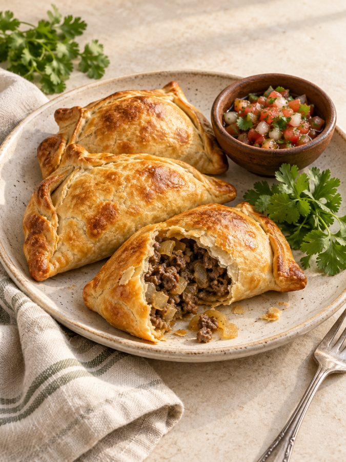
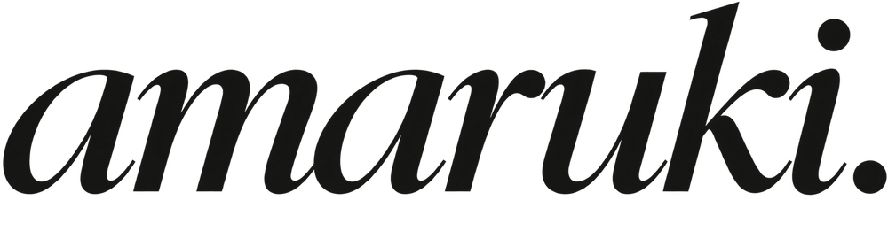

La Mesa.
Un menú de tres productos, con una portada cálida y una carta pensada para compartir desde el celular.
Ver catálogo PDFNegocio ficticio. Fotos ilustrativas de IA y precios de ejemplo. No corresponde a un cliente real.
UN ESTUDIO EN CONSTRUCCIÓN · BIOBÍO, CHILE
Ideas claras. Detalles cuidados.
Un espacio para lo que estamos creando.
Comida para
compartir.

01 / PORTAFOLIO
El comienzo de una colección.
Cada proyecto tiene su propio propósito.
Un menú de tres productos, con una portada cálida y una carta pensada para compartir desde el celular.
Ver catálogo PDFNegocio ficticio. Fotos ilustrativas de IA y precios de ejemplo. No corresponde a un cliente real.

La identidad de nuestro estudio: carbón, marfil y oliva, una marca de carácter editorial y espacio para dejar respirar cada idea.
Explorar el lenguaje visualProyecto propio. Una exploración de identidad y de este portafolio.
Este portafolio empieza con una demostración y un proyecto propio. Los trabajos para clientes se incorporarán con su autorización.
No hay trabajos en esta categoría todavía.
OFERTA INICIAL · SIN MENSUALIDAD
$24.990 CLP total
Para una carta breve con productos y precios definidos.
Consultar por mi catálogoNo incluye fotografía, logo, tienda online, publicidad ni cambios ilimitados. Los errores nuestros se corrigen.
02 / EL ESTUDIO
Somos Amaruki Enterprise, un proyecto que está dando sus primeros pasos desde Santa Juana, en la Región del Biobío.
Estamos explorando el diseño de catálogos digitales para negocios de comida: ordenar productos, fotos y precios para que la información sea fácil de leer y compartir.
Este espacio documenta nuestras ideas y trabajos a medida que vamos aprendiendo y construyendo.
03 / LENGUAJE VISUAL
Una base sencilla para
mantener cada pieza coherente.
Sans para leer con claridad.
Serif cursiva para la marca.
Carbón, oliva y marfil.
Un acento oliva para los detalles.
Jerarquía clara.
Espacio para lo que importa.
ANTES DE EMPEZAR
Una lista de hasta 15 productos con sus nombres, precios vigentes y fotos, más el nombre del negocio y los datos para realizar pedidos. Si hace falta, agrega una descripción breve de cada producto. Las fotos y la información deben pertenecer a tu negocio o contar con autorización de uso.
No necesitan ser profesionales, pero sí claras, bien iluminadas y fieles a lo que vendes. Se revisan antes de confirmar el pedido. El servicio no incluye fotografía. Las imágenes de IA de nuestra muestra son ilustrativas; para tu menú usamos las fotos que proporciones de tus productos.
Los tres días hábiles para la primera versión comienzan cuando recibimos todos los materiales completos y confirmamos el pedido. Si falta información, el plazo todavía no empieza. La entrega final depende de recibir tus comentarios para la ronda de ajustes.
Una lista agrupada de cambios sobre la primera versión: corregir textos o precios, ajustar el orden y reemplazar fotos de los productos incluidos. Se revisa todo junto en una ronda. Una nueva propuesta completa o ampliar el alcance requiere una cotización aparte. Los errores nuestros se corrigen.
Guarda el PDF final en tu celular y adjúntalo como documento en una conversación de WhatsApp. Tus clientes podrán abrirlo o descargarlo. Recibirás el archivo listo para guardar y compartir; no necesitas una tienda online para usarlo.
Sí, se puede preparar una nueva versión del PDF. Los precios del archivo entregado no se actualizan automáticamente. Los cambios que pidas después de la entrega final se cotizan por separado; una corrección de un error nuestro se incluye.
No podemos asegurar más ventas. El objetivo es presentar tus productos y precios de forma clara, fácil de leer y compartir. Los resultados también dependen de tu oferta, la demanda y cómo atiendes y promocionas tu negocio.
Puedes escribirnos a amarukienterprise@gmail.com para revisar si el formato encaja con tu negocio. Estamos validando esta propuesta y todavía no recibimos pagos. Antes de confirmar un pedido, revisaremos los materiales y el alcance contigo.